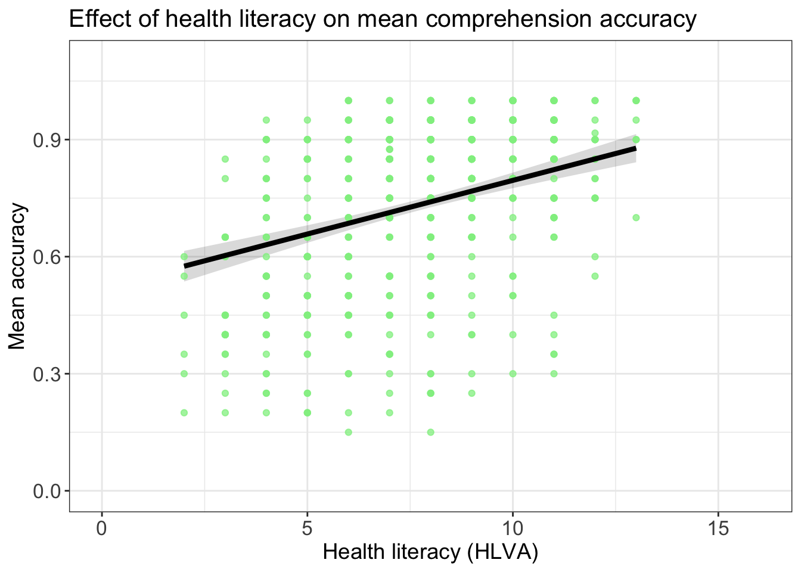
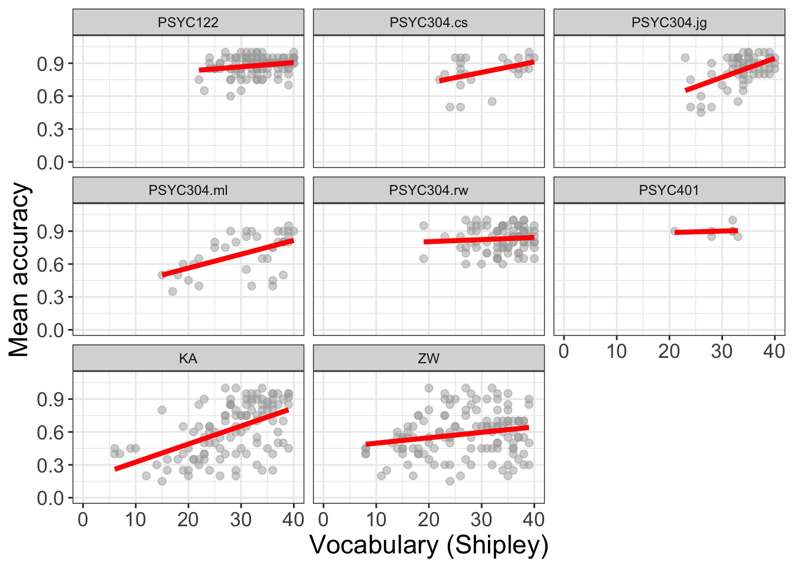

| ResponseId | mean.acc | mean.self | AGE | GENDER | EDUCATION | ETHNICITY | SHIPLEY | HLVA | FACTOR3 | NATIVE.LANGUAGE | study |
|---|---|---|---|---|---|---|---|---|---|---|---|
| R_1lcaBAGJNNI2kju | 1.00 | 7.6 | 18 | Female | Further | White | 31 | 10 | 48 | English | PSYC122 |
| R_AG4jiTm8oxmuOOZ | 0.90 | 7.6 | 18 | Female | Further | White | 35 | 10 | 40 | English | PSYC122 |
| R_2Ckb6YXLPGwYSvg | 0.95 | 7.2 | 18 | Male | Further | Asian | 35 | 9 | 47 | Other | PSYC122 |
| R_27JY5xHHcMs7jGi | 0.90 | 6.8 | 18 | Female | Further | White | 35 | 8 | 52 | English | PSYC122 |
| R_1DtJ4mrOXmxre01 | 0.85 | 6.4 | 19 | Female | Further | White | 33 | 9 | 41 | English | PSYC122 |
| R_PRFQFInzSS6T8e5 | 0.90 | 6.2 | 19 | Female | Further | Mixed | 36 | 5 | 52 | English | PSYC122 |
6 Developing the linear model
6.1 Overview
Welcome to your overview of the work we will do together in Week 10.
This week, we focus on strengthening your ability to apply the linear model approach to a wider range of research questions.
In the context of the Clearly understood project, we frame our analysis concerns and methods in relation to example research questions, including the question:
- What person attributes predict success in understanding?
This is to help you to learn to think critically about what it is you want to do with linear models when you use them, or read about their results.
It will be seen that to answer research questions like this example question, we will need to think about how we analyze data when multiple different predictor variables could be included in our model.
Most of the time, in your future professional work, when you use linear models you will be trying to predict outcomes (behaviours, person attributes) given information from multiple different predictor variables at once. You will be able to do this work using what you learn this week.
As students, now, learning how to move from analyses involving one outcome and one predictor variable, to analyses involving one outcome and multiple outcome variables unlocks a much wider range of contexts in which you can apply the skills and understanding you develop here to address research problems and questions of your own.
6.2 Our learning goals
We will learn how to:
- Skills – extend our capacity to code models so that we can incorporate multiple predictors;
- Concepts – develop the critical thinking processes required to make decisions about what predictors to include when you code your model;
- Concepts and skills – learn how to critically evaluate results, given variation between samples.
We will revise how to:
- Skills – identify and interpret model statistics;
- Concepts and skills – critically evaluate the results;
- Concepts and skills – communicate the results.
As we progress, we will continue to strengthen your skills in building professional visualizations. This week, we will learn how to exploit professional tools to automatically generate and plot model predictions, when previously we produced model predictions by hand.
6.3 Learning resources
You will see, next, the lectures we share to explain the concepts you will learn about, and the practical data analysis skills you will develop (Section 6.3.1). Then you will see information about the practical materials you can use to build and practise your skills (Section 6.3.2).
Every week, you will learn best if you first watch the lectures then do the practical exercises.
Linked resources
- In Chapter 2, we share materials to support your development of critical thinking about associations, and your development of practical skills in working with correlation-based analyses.
- In Chapter 5, we introduce you to the main ideas and practical steps involved in conducting linear model analyses.
6.3.1 Lectures
The lecture materials for this week are presented in four short parts.
Click on a link and your browser should open a tab showing the Panopto video for the lecture part.
- Part 1 (20 minutes) Developing the linear model: The concepts and skills we will learn about in week 10: our aims, the research questions we can answer with linear models, making the move to working with linear models with multiple predictors, why the main challenge is not the coding but the choices over which predictors to include in a model.
- Part 2 (13 minutes): Coding, thinking about, and reporting linear models with multiple predictors.
- Part 3 (21 minutes): Critically evaluating the results of analyses involving linear models.
- Part 4 (19 minutes): The linear model is very flexible, powerful and general.
Download the lecture slides
The slides presented in the videos can be downloaded here:
- The slides exactly as presented (11 MB).
You can download the web page .html file and click on it to open it in any browser (e.g., Chrome, Edge or Safari). The slide images are high quality so the file is quite big and may take a few seconds to download.
We are going to work through some practical exercises, next, to develop your critical thinking and practical skills for working with linear models.
6.3.2 Practical materials: data and R-Studio
We will work with one data file which you can download by clicking on its name (below):
Once you have downloaded the file, you will need to upload it to the R-Studio server to access it so that you can do the practical exercises.
Important
Here is a link to the sign-in page for R-Studio Server
6.3.3 Practical materials guide
As usual, you will find that the practical exercises are simpler to do if you follow these steps in order.
- The data — We will take a quick look at what is inside the data files so you know what everything means.
- The
how-toguide — We will go through the practical analysis and visualization coding steps, showing all the code required for each step. - The
practicalexercises — We will set out the tasks, questions and challenges that you should complete to learn the practical skills we target this week.
This week — Week 10 — we aim to further develop skills in working with the linear model, and in visualizing and testing the associations between variables in psychological data.
- While we build on everything you have learned so far, the skills you learn in this class unlock your capacity to analyse most kinds of data you will encounter in most situations: a big expansion in the scope of your capacities.
Week 10 parts
- Set-up
- Load the data
- Revision: using a linear model to answer research questions – one predictor.
- New: using a linear model to answer research questions – multiple predictors.
- New: plot predictions from linear models with multiple predictors.
- New: estimate the effects of factors as well as numeric variables.
- New: examine associations comparing data from different samples.
We learn these skills so that we can answer research questions like:
- What person attributes predict success in understanding?
Questions like this are often answered by analyzing psychological data using some form of linear model.
As usual, when we do these analyses, we need to think about how we report the results, so part of the learning you will complete will enable you to:
- report information about the kind of model you specify;
- report the nature of the associations (or effects) estimated in your model;
- evaluate the results, making decisions about (i.) the significance of effects (ii.) whether estimates of effects suggest a positive or negative relationship between outcome and predictor (iii.) whether estimates of effects suggest a strong or a weak relationship.
We will really strengthen your ability to produce professional visualizations by learning how to translate model results into plots that help you and your audience to translate what your model tells you into accurate understanding and plain language.
6.3.3.1 The data files
Each of the data files we have worked with has had a similar structure. This week, that continuity remains. But, this week, we move on to working with a big data-set similar to the data you may encounter in real-world situations.
- What is new about this data-set is that it holds data from multiple studies in which the same methods were used – these are replication studies – enabling us to look the questions about results reproducibility across studies that you have been hearing about.
Here are what the first few rows in the data file all.studies.subjects looks like:
Tip
The webpage has a slider under the data table window, so you can scroll across the columns: move your cursor over the window to show the slider.
When you look at the data table, you can see the columns:
ResponseIdparticipant codemean.accaverage accuracy of response to questions testing understanding of health guidancemean.selfaverage self-rated accuracy of understanding of health guidancestudyvariable coding for what study the data were collected inAGEage in yearsHLVAhealth literacy test scoreSHIPLEYvocabulary knowledge test scoreFACTOR3reading strategy survey scoreGENDERgender codeEDUCATIONeducation level codeETHNICITYethnicity (Office National Statistics categories) code
You can now see a new column:
NATIVE.LANGUAGEwhich codes for what language study participants grew up speaking (English, Other)
6.3.3.2 The how-to guide
We will take things step-by-step.
Make sure you complete each part, task and question, in order, before you move on to the next one.
6.3.3.3 How-to Part 1: Set-up
To begin, we set up our environment in R.
6.3.3.3.1 How-to Task 1 – Run code to empty the R environment
rm(list=ls()) 6.3.3.3.2 How-to Task 2 – Run code to load libraries
Load libraries using library().
library("ggeffects")
library("patchwork")
library("psych")
library("tidyverse")6.3.3.4 How-to Part 2: Load the data
6.3.3.4.1 How-to Task 3 – Read in the data file we will be using
We will be working with the data file:
2022-12-08_all-studies-subject-scores.csv.
Read in the file – using read_csv().
all.studies.subjects <- read_csv("2022-12-08_all-studies-subject-scores.csv")6.3.3.4.2 How-to Task 4 – Inspect the data file
In previous classes, we have used the summary() function to inspect the data.
Now, let’s do something new.
We use the describe() function from the {psych} library to produce descriptive statistics for the variables in the data-set.
describe(all.studies.subjects) vars n mean sd median trimmed mad min max range
ResponseId* 1 615 308.00 177.68 308.0 308.00 228.32 1.00 615 614.00
mean.acc 2 561 0.73 0.21 0.8 0.76 0.22 0.15 1 0.85
mean.self 3 561 6.53 1.72 6.8 6.69 1.78 1.00 9 8.00
AGE 4 615 28.34 13.56 23.0 25.59 5.93 18.00 100 82.00
GENDER* 5 615 1.32 0.54 1.0 1.25 0.00 1.00 5 4.00
EDUCATION* 6 615 2.15 0.93 3.0 2.18 0.00 1.00 3 2.00
ETHNICITY* 7 615 1.64 0.64 2.0 1.60 0.00 1.00 5 4.00
SHIPLEY 8 615 28.98 9.52 32.0 30.48 7.41 0.00 40 40.00
HLVA 9 615 7.22 3.09 8.0 7.49 2.97 0.00 13 13.00
FACTOR3 10 615 44.03 14.67 48.0 46.69 8.90 0.00 63 63.00
NATIVE.LANGUAGE* 11 615 1.54 0.50 2.0 1.55 0.00 1.00 2 1.00
study* 12 615 5.10 2.56 5.0 5.25 2.97 1.00 8 7.00
skew kurtosis se
ResponseId* 0.00 -1.21 7.16
mean.acc -0.83 -0.31 0.01
mean.self -0.86 0.49 0.07
AGE 2.05 4.70 0.55
GENDER* 2.28 9.65 0.02
EDUCATION* -0.30 -1.79 0.04
ETHNICITY* 1.22 3.93 0.03
SHIPLEY -1.47 1.96 0.38
HLVA -0.69 0.00 0.12
FACTOR3 -1.85 3.25 0.59
NATIVE.LANGUAGE* -0.15 -1.98 0.02
study* -0.43 -1.30 0.10In the reports you write – whether as a student or, later, in your professional work – you may often be required to present table summaries of the variables in your data, incorporating descriptive statistics.
- You can use the
describe()function to get R to do the work for you.
We want to get just the descriptive statistics we want.
We are going to do this in two steps:
- we select the variables we care about;
- we get just the descriptive statistics we want for those variables
We will do this using two different but equivalent methods.
First, we are going to do this using the %>% pipes that you saw previously (in week 5):
all.studies.subjects %>%
select(mean.acc, mean.self, AGE, SHIPLEY, HLVA, FACTOR3) %>%
describe(skew = FALSE) vars n mean sd min max range se
mean.acc 1 561 0.73 0.21 0.15 1 0.85 0.01
mean.self 2 561 6.53 1.72 1.00 9 8.00 0.07
AGE 3 615 28.34 13.56 18.00 100 82.00 0.55
SHIPLEY 4 615 28.98 9.52 0.00 40 40.00 0.38
HLVA 5 615 7.22 3.09 0.00 13 13.00 0.12
FACTOR3 6 615 44.03 14.67 0.00 63 63.00 0.59These are the code elements and what they do:
all.studies.subjects %>%– you tell R to use theall.studies.subjectsdataset, then use%>%to ask R to take those data to the next step: to%>%pipe it forwards on to the next step.select(mean.acc, mean.self, AGE, SHIPLEY, HLVA, FACTOR3) %>%– you tell R to select just those variables inall.studies.subjectsthat you name and%>%pipe them to the next step.describe(...)– you tell R to give you descriptive statistics for the variables you have selected.describe(skew = FALSE)– critically, you add the argumentskew = FALSEto turn off the option indescribe()to report skew, kurtosis: because we do not typically see these statistics reported in psychology.
Tip
Modern R coding often uses the pipe. When you see it, you see it used in a process involving a series of steps.
- Do this thing, then send the results
%>to the next step, do the next thing then send the results%>%to the next step… - When you look at
ggplot()code, the+at the end of each line of plotting code is doing a similar job to the pipe.
Not everyone is comfortable coding this way so next we will do the same thing in an old style.
all.studies.subjects.select <- select(all.studies.subjects,
mean.acc, mean.self, AGE, SHIPLEY, HLVA, FACTOR3)
describe(all.studies.subjects.select, skew = FALSE) vars n mean sd min max range se
mean.acc 1 561 0.73 0.21 0.15 1 0.85 0.01
mean.self 2 561 6.53 1.72 1.00 9 8.00 0.07
AGE 3 615 28.34 13.56 18.00 100 82.00 0.55
SHIPLEY 4 615 28.98 9.52 0.00 40 40.00 0.38
HLVA 5 615 7.22 3.09 0.00 13 13.00 0.12
FACTOR3 6 615 44.03 14.67 0.00 63 63.00 0.59These are the code elements and what they do:
all.studies.subjects.select <- ...(all.studies.subjects, ...)– you tell R to create a new datasetall.studies.subjects.selectfrom the originalall.studies.subjects– the new dataset will include just the variables we select from the original.select(all.studies.subjects, ...)– you tell R to select the variables you want using theselect(...)function: telling R to select variables fromall.studies.subjects.... select(..., mean.acc, mean.self, AGE, SHIPLEY, HLVA, FACTOR3)– you tell R to select the variables you want by entering the variable names, separated by commas, after you have named the dataset.describe(...)– you tell R to give you descriptive statistics.describe(all.studies.subjects.select, ...)– you name the dataset with the selection of variables you have created, telling thedescribe()function what data to work with.describe(skew = FALSE)– critically, you add the argumentskew = FALSEto turn off the option to report skew, kurtosis to keep the descriptive statistics short.
What are we learning here?
First, we can do exactly the same thing in two different but related ways:
- Use the way that (1.) works and (2.) you prefer.
- Which should you prefer? You may reflect on how easy the code is to write, read, understand and use
Second, we modify how the function describe() works by adding an argument: describe(skew = FALSE).
We have been doing this kind of move, already, by adding arguments to, e.g., specify point colour in ggplot() code.
As your skills advance, so your preferences on how you want R to work for you will become more specific.
- You can modify the outputs from functions so that you get exactly what you want in the way that you want it.
The information on the options available to you for any argument can be found in different kinds of places, see the further information box, below.
Further information you can explore
- Here is an explanation for how to use pipes %>% when you code and why it may be helpful to do so:
https://r4ds.had.co.nz/pipes.html
Note that we are not going to require the use of pipes in PSYC411.
- You can get a guide to the ‘psych’ library here:
http://personality-project.org/r/psych/vignettes/intro.pdf
Every “official” R library has a technical manual on the central R resource CRAN, and the manual for ‘psych’ can be found here:
https://cran.r-project.org/web/packages/psych/psych.pdf
- where you can see information on the functions the library provides, and how you can use each function.
This is how you ask for help in R for a function, e.g., just type: ?describe or help(describe).
The {psych} library is written by William Revelle who provides a lot of useful resources here:
6.3.3.5 How-to Part 4: Using a linear model to answer research questions – one predictor
6.3.3.5.1 How-to Task 5 – Examine the relation between outcome mean accuracy (mean.acc) and health literacy (HLVA)
One of our research questions is:
- What person attributes predict success in understanding?
Here, we can address the question directly because we have information on an outcome, mean accuracy (mean.acc), and information on a predictor, health literacy (HLVA). Given the theoretical account outlined in Chapter 2, our hypothesis is that people who possess a higher level of background knowledge, measured here using the health literacy (HLVA) test, will be more likely to accurately understand health information when they read it, with understanding tested to calculate the mean accuracy (mean.acc). This hypothesis translates into a statistical prediction: if people in our sample have higher HLVA scores, we predict that, on average, they will also have higher mean.acc scores.
To address the research question, we test the statistical prediction using the linear model:
model <- lm(mean.acc ~ HLVA, data = all.studies.subjects)
summary(model)
Call:
lm(formula = mean.acc ~ HLVA, data = all.studies.subjects)
Residuals:
Min 1Q Median 3Q Max
-0.59375 -0.11731 0.02981 0.13269 0.37100
Coefficients:
Estimate Std. Error t value Pr(>|t|)
(Intercept) 0.414250 0.025912 15.99 <2e-16 ***
HLVA 0.041188 0.003182 12.94 <2e-16 ***
---
Signif. codes: 0 '***' 0.001 '**' 0.01 '*' 0.05 '.' 0.1 ' ' 1
Residual standard error: 0.1853 on 559 degrees of freedom
(54 observations deleted due to missingness)
Multiple R-squared: 0.2306, Adjusted R-squared: 0.2292
F-statistic: 167.5 on 1 and 559 DF, p-value: < 2.2e-16If you look at the model summary you can answer the following questions
Q.1. What is the estimate for the coefficient of the effect of the predictor, HLVA?
A.1. 0.041188
Q.2. Is the effect significant?
A.2. It is significant because p < .05
Q.3. What are the values for t and p for the significance test for the coefficient? A.3. t = 12.94, p <2e-16
Q.4. What do you conclude is the answer to the research question, given the linear model results?
A.4. The model slope estimate suggests that as
HLVAscores increase so also domean.accscores.
Q.5. What is the F-statistic for the regression? Report F, DF and the p-value.
A.5. F-statistic: 167.5 on 1 and 559 DF, p-value: < 2.2e-16
Q.6. Is the regression significant?
A.6. Yes: the regression is significant.
Q.7. What is the Adjusted R-squared?
A.7. Adjusted R-squared: 0.2292
Q.8. Explain in words what this R-squared value indicates?
A.8. The R-squared suggests that 23% of outcome variance can be explained # by the model
What are we learning here?
It is worth your time reflecting, here, on how statistical analyses are incorporated in research work.
- We have ideas about a psychological process: e.g., reading comprehension.
- We have assumptions of a theoretical account of that process: e.g., we use background knowledge to understand what we read.
- Given those assumptions, we derive hypotheses that we translate into statistical predictions: e.g., higher health literacy predicts higher accuracy of understanding.
- We test a statistical prediction using a method like
lm(), specifying a model that aligns with the prediction terms: the outcome, the predictor(s).
6.3.3.6 How-to Part 4: Using a linear model to answer research questions – multiple predictors
6.3.3.6.1 How-to Task 6 –Examine the relation between outcome mean accuracy (mean.acc) and multiple predictors including: health literacy (HLVA); vocabulary (SHIPLEY); AGE; reading strategy (FACTOR3)
We saw that our research question is:
- What person attributes predict success in understanding?
In the previous task, we tried to model success in understanding using just one predictor variable but it is unrealistic that a person’s capacity to understand health information will be predicted by just one thing, their background knowledge. It is more likely that variation on multiple dimensions will predict understanding.
What could those variables be?
We can examine the relation between outcome mean accuracy (mean.acc) and multiple predictors simultaneously. Here, the candidate predictor variables include: health literacy (HLVA); vocabulary (SHIPLEY); AGE; reading strategy (FACTOR3).
We can incorporate all predictors together in a linear model: we use lm(), as before, but now specify each variable listed here by variable name.
model <- lm(mean.acc ~ HLVA + SHIPLEY + FACTOR3 + AGE, data = all.studies.subjects)
summary(model)
Call:
lm(formula = mean.acc ~ HLVA + SHIPLEY + FACTOR3 + AGE, data = all.studies.subjects)
Residuals:
Min 1Q Median 3Q Max
-0.57543 -0.08115 0.02303 0.11169 0.38810
Coefficients:
Estimate Std. Error t value Pr(>|t|)
(Intercept) 0.0996243 0.0468313 2.127 0.0338 *
HLVA 0.0274954 0.0032461 8.470 < 2e-16 ***
SHIPLEY 0.0083457 0.0011430 7.302 9.88e-13 ***
FACTOR3 0.0050332 0.0009246 5.444 7.84e-08 ***
AGE -0.0025503 0.0005074 -5.026 6.75e-07 ***
---
Signif. codes: 0 '***' 0.001 '**' 0.01 '*' 0.05 '.' 0.1 ' ' 1
Residual standard error: 0.1668 on 556 degrees of freedom
(54 observations deleted due to missingness)
Multiple R-squared: 0.3799, Adjusted R-squared: 0.3755
F-statistic: 85.17 on 4 and 556 DF, p-value: < 2.2e-16If we look closely at this code example, we can first identify the working elements in the linear model code, but then we can identify some general properties that it will be useful to you to learn about.
First, let’s work through the elements of the linear model code so we can see what everything does:
model <- lm(...)– tell R you want to fit the model usinglm(...), and give the model a name: here, we call it “model”....lm(mean.acc ~ HLVA...)– tell R you want a model of the outcomemean.accpredicted~by the predictors:HLVA,SHIPLEY,FACTOR3,AGE.
- Note that we use the variable names as they appear in the dataset, and that each predictor variable is separated from the next by a plus sign.
...data = all.studies.subjects)– tell R that the variables you name in the formula are in theall.studies.subjectsdata-set.summary(model)– ask R for a summary of the model you called “model”: this is how you get the results.
Tip
Notice that R has a general formula syntax: outcome ~ predictor or y ~ x
- and uses the same format across a number of different functions;
- each time, on the left of the tilde symbol
~you identify the output or outcome variable; - here, what is new is that you see on the right of the tilde
~multiple predictor variables:y ~ x1 + x2 + ...
If you look at the model summary you can answer the following questions.
(We have hidden the answers – so that you can test yourself – but you can reveal each answer by clicking on the box.)
Q.7. What is the estimate for the coefficient of the effect of the predictor
HLVAin this model?
Answer
A.7. 0.0274954
Q.8. Is the effect significant?
Answer
A.8. It is significant because p < .05.
Q.9. What are the values for t and p for the significance test for the coefficient?
Answer
A.9. t = 8.470, p < 2e-16
Q.10. What do you conclude is the answer to the research question, given the linear model results?
Answer
A.10. The model slope estimate 0.0274954 suggests that as HLVA scores # increase so also do mean.acc scores
Q.11. How is the coefficient estimate for the HLVA slope similar or different, comparing this model with multiple predictors to the previous model with one predictor?
Answer
A.11. It can be seen that the HLVA estimate in the two models is different in that it is a bit smaller in the model with multiple predictors compared to the model with one predictor. The HLVA estimate is similar in that it remains positive, and it is about the same size.
What are we learning here?
The estimate of the coefficient of any one predictor can be expected to vary depending on the presence of other predictors.
- This is one reason why we need to be transparent about why we choose to use the predictors we include in our model.
- The lecture for week 10 discusses this concern in relation to the motivation for good open science practices.
Q.12. Can you report the estimated effect of
SHIPLEY(the measure of vocabulary)?
Answer
A.12. The effect of vocabulary knowledge (
SHIPLEY) on mean accuracy of understanding is significant (estimate = 0.01, t = 7.30, p < .001), indicating that increasing skill is associated with increasing accuracy.
Q.13. Can you report the model and the model fit statistics?
Answer
A.13. We fitted a linear model with mean comprehension accuracy as the outcome and health literacy (
HLVA), reading strategy (FACTOR3), vocabulary (SHIPLEY) andAGE(in years) as predictors. The model is significant overall, with F(4, 556) = 85.17, p < .001, and explains 38% of variance (adjusted R2 = 0.38).
6.3.3.7 How-to Part 5: Plot predictions from linear models with multiple predictors
6.3.3.7.1 How-to Task 7 – Produce and plot model results using R functions that make the process easier
We can begin by plotting linear model predictions for one of the predictors in the multiple predictors model we have been working with.
- Previously, we used
geom_abline(), specifying intercept and slope estimates, to produce and plot model predictions. - Here, we use functions that are very helpful when we need to plot model predictions for a predictor, for models where we have multiple predictors.
We do this in three steps:
- We first fit a linear model of the outcome, given our predictors, and we save information about the model.
- We use the
ggpredict()function from the{ggeffects}library to take the information about the model and create a set of predictions we can use for plotting. - We plot the model predictions, producing what are also called marginal effects plots.
We write the code to do the work as follows.
- We first fit a linear model of the outcome, given our predictors:
model <- lm(mean.acc ~ HLVA + SHIPLEY + FACTOR3 + AGE,
data = all.studies.subjects)model <- lm(...)– we fit the model usinglm(...), giving the model a name: “model”....lm(mean.acc ~ HLVA + ... + ...)– this model estimates how the outcomemean.accchanges, is predicted~given information about the predictorsHLVA,SHIPLEY,FACTOR3, andAGE.- Notice: when we use
lm()to fit the model, R creates a set of information about the model, including estimates. - We give that set of information a name (“model”), and we use that name, next, to call on and use the model information to make the plot.
- We use the
ggpredict()function from the{ggeffects}library to take the information about the model and create a set of predictions we can use for plotting:
dat <- ggpredict(model, "HLVA")dat <- ggpredict(...)– we ask R to create a set of predictions, and we give that set of predictions a namedat.... ggpredict(model, "HLVA")– we tell R what model information it should use (from “model”), and which predictor variable we need predictions for:HLVA.
- We plot the model predictions (marginal effects plots):
plot(dat)
6.3.3.7.2 How-to Task 8 – Optional – Edit the appearance of the marginal effect (prediction) plot as you can with any ggplot object
Once we have created the model predictions plot, we can edit it like we would edit any other ggplot object.
- This is clearly advanced but it helps you to see just how powerful your capabilities can be if you aim to develop skills in this kind of work.
p.model <- plot(dat)
p.model +
geom_point(data = all.studies.subjects,
aes(x = HLVA, y = mean.acc), size = 1.5, alpha = .75, colour = "lightgreen") +
geom_line(size = 1.5) +
ylim(0, 1.1) + xlim(0, 16) +
theme_bw() +
theme(
axis.text = element_text(size = rel(1.15)),
axis.title = element_text(size = rel(1.25)),
plot.title = element_text(size = rel(1.4))
) +
xlab("Health literacy (HLVA)") + ylab("Mean accuracy") +
ggtitle("Effect of health literacy on mean comprehension accuracy")Warning: Using `size` aesthetic for lines was deprecated in ggplot2 3.4.0.
ℹ Please use `linewidth` instead.Scale for y is already present.
Adding another scale for y, which will replace the existing scale.Warning: Removed 54 rows containing missing values or values outside the scale range
(`geom_point()`).
We do this in stages, as we have done for other kinds of plots:
p.model <- plot(dat)– we create a plot object, which we call ‘p.model’.p.model +– we then set up the first line of a series of code lines, starting with the name of the plot,p.modeland a+to show we are going to add some edits.geom_point(data = all.studies.subjects, aes(x = HLVA, y = mean.acc) ...)– we first add the raw data points showing the observedHLVAandmean.accfor each person in our sample.geom_point(... size = 1.5, alpha = .75, colour = "lightgreen") +– we modify the appearance of the points, thengeom_line(size = 1.5) +– we add the prediction line, using the predictions created earlier, thenylim(0, 1.1) + xlim(0, 16) +– we set axis limits to show the full potential range of variation in each variable, thentheme_bw()– we set the theme to black and white, thentheme(axis.text = element_text(size = rel(1.15)), ...)– we modify the relative size of x-axis, y-axis and plot title label font, thenxlab("Health literacy (HLVA)") + ylab("Mean accuracy") +– we edit labels to make them easier to understand, thenggtitle("Effect of health literacy on mean comprehension accuracy")– we give the plot a title
Tip
Notice that here, we are constructing a complex plot from two datasets:
- We use
plot(dat)to construct a plot showing the prediction line usinggeom_line(size = 1.5) + - We then add a layer to the plot to show the raw sample data, using
geom_point(data = all.studies.subjects, ...)– to tell R to work with the sample data-setall.studies.subjects - and to show points representing the (aesthetic mappings) values, given that sample data, for (
x = HLVA, y = mean.acc).
What are we learning here?
This complex plot is a good example of:
- How we can plot summary of prediction data plus observed outcomes, and this connects to the classes on visualization.
- How we can add layers of edits, or geometric objects, together to create complex plots that can show our audience messages like, here, that there is an average trend (shown by the line) but that individual outcomes vary quite a bit from the average.
6.3.3.7.3 How-to Task 9 – Optional – Now produce plots that show the predictions for all the predictor variables in the model
This is optional but we offer the task as an opportunity for practice with these notes.
- The code may get pretty lengthy.
- You will need to adjust axis labels so for each plot we see the correct predictor as the x-axis label
- You will give the plot titles as letters a-e so that, if you put this plot in a report, you can refer to each plot by letter in comments in a report.
Code
We will use the {Patchwork} library:
library(patchwork)First, fit the model and get the model information:
model <- lm(mean.acc ~ HLVA + SHIPLEY + FACTOR3 + AGE,
data = all.studies.subjects)Second, get the predictions, given the model information, for two different predictor variables.
- Notice that I use different names for different sets of predictors.
dat.HLVA <- ggpredict(model, "HLVA")
dat.SHIPLEY <- ggpredict(model, "SHIPLEY")Third, produce plots of the predictions, giving each plot object a different plot name.
- Notice that I use different names for different sets of predictors.
plot.HLVA <- plot(dat.HLVA)
plot.SHIPLEY <- plot(dat.SHIPLEY)Last, put the two plots together by calling their names.
plot.HLVA + plot.SHIPLEYThe {Patchwork} library functions are really powerful and the documentation information is really helpful:
https://patchwork.data-imaginist.com/articles/patchwork.html
What are we learning here?
If you follow the code example, and learn how to:
- complete a linear model analysis with multiple predictors and
- present the model results, for all effects (estimates of the impact of all predictors) simultaneously
- then this is a big deal, as a skill development learning achievement
- because knowing about this process, and knowing how to do it, unlocks an important advanced analysis and visualization skill.
Tip
Knowing how to follow this model \(\rightarrow\) visualization workflow gives you a competitive advantage in future professional settings (job applications, interviews, workplace) because not many Psychology graduates can do it, yet.
6.3.3.8 How-to Part 6: New: estimate the effects of factors as well as numeric variables
As we have seen, one of our research questions is:
- What person attributes predict success in understanding?
We have not yet included any categorical or nominal variables as predictors but we can, and should: lm() can cope with any kind of variable as a predictor.
Tip
In Part 4 of the Week 10 lectures, I explain that fundamentally every kind of analysis you have learnt before (t-test, ANOVA, etc.) can be understood as a kind of linear model. This part shows how that works.
- In a (two groups) t-test, you are comparing the average outcome between two different groups.
- To do that analysis, you need an outcome variable (like
mean.acc) and a categorical variable or factor (like, say, experimental condition: condition 1 versus condition 2). - Here, we see how you can do the same kind of group comparison using a linear model.
There are different ways to do this, here we look at one. Extra information about the second can be found in the drop-down box, following.
6.3.3.8.1 How-to Task 10 – Fit a linear model including both numeric variables and categorical variables as predictors model including both numeric variables and categorical
7 variables as predictors
We begin by inspecting the data to check what variables are categorical or nominal variables – factors – using summary().
Code
summary(all.studies.subjects)
summary() gives you the information you need because R shows factors with a count of the number of observations for each level.
Tip
What are factors?
- A factor is a categorical variable.
- Categorical variables have a “fixed and known set of possible values”, for example, maybe you are working with the factor
EDUCATION: in the data collection process, answers to the question “What is your education level?” can have only one of three possible values (further, higher, secondary). - For any factor, different values of the variable are called
levelsso, forEDUCATIONthe different levels are:further, higher, secondary
R treats factors differently from other kinds of variables:
- R will not give you summary statistics (e.g., a mean) for values of a factor. It can’t because: what is the mean of education?
- R will count the number of times each
levelin afactorappears in a sample. - If you are plotting a bar chart or a boxplot to show outcomes for different groups or conditions then the group or condition coding variable (e.g.,
aes(x = group)) has to be a factor.
We can build on our previous work by including the factor NATIVE.LANGUAGE as a predictor:
model <- lm(mean.acc ~ HLVA + SHIPLEY + FACTOR3 + AGE + NATIVE.LANGUAGE,
data = all.studies.subjects)Now, take a look at the results to answer the following questions.
Q.14. Can you report the estimated effect of
NATIVE.LANGUAGE(the coding of participant language status:EnglishversusOther)?
A.14. The effect of language status (
NATIVE.LANGUAGE) on mean accuracy of understanding is significant (estimate = -0.09, t = -6.37, p < .001) indicating that not being a native speaker of English (‘Other’) is associated with lower accuracy.
Q.15. Can you report the model and the model fit statistics?
A.15. We fitted a linear model with mean comprehension accuracy as the outcome and health literacy (
HLVA), reading strategy (FACTOR3), vocabulary (SHIPLEY) andAGE(years), as well as language status as predictors. The model is significant overall, with F(5, 555) = 81.09, p < .001, and explains 42% of variance (adjusted R2 = 0.42).
Q.16. What changes, when you compare the models with versus without
NATIVE.LANGUAGE?
A.16. If you compare the summaries, for the last two models, you can see that the proportion of variance explained,
R-sq, increases to 42% (0.4221), suggesting that knowing about participant language background helps to account for their response accuracy in tests of comprehension of health advice.
Tip
R handles factors, by default, by picking one level (e.g., English) as the reference level (or baseline) and comparing outcomes to that baseline, for each other factor level (here, Other).
- This is why, in this model, the effect of
NATIVE.LANGUAGEis estimated as the average difference inmean.accoutcome forEnglishcompared toOtherparticipants. - This is why the effect is listed as:
NATIVE.LANGUAGEOtherin the summary table for the model
Extra information: ANOVAs, and coding factors for analysis
There are different ways to code factors for analysis:
- If you are doing an analysis where your data come from, say, a factorial design (e.g. a 2 x 2 study design) then you will want to use a different coding scheme: sum or effect coding.
It is easy to do this, in two steps, proceeding as follows.
- We first change the coding scheme.
- Get the
{memisc}library:
library(memisc)Loading required package: latticeLoading required package: MASS
Attaching package: 'MASS'The following object is masked from 'package:dplyr':
selectThe following object is masked from 'package:patchwork':
area
Attaching package: 'memisc'The following objects are masked from 'package:lubridate':
as.interval, is.intervalThe following objects are masked from 'package:dplyr':
collect, recode, rename, symsThe following object is masked from 'package:purrr':
%@%The following object is masked from 'package:tibble':
viewThe following object is masked from 'package:ggplot2':
symsThe following objects are masked from 'package:stats':
contr.sum, contr.treatment, contrastsThe following object is masked from 'package:base':
as.array- Check the coding:
contrasts(all.studies.subjects$NATIVE.LANGUAGE) Other
English 0
Other 1- Change the coding
contrasts(all.studies.subjects$NATIVE.LANGUAGE) <- contr.sum(2, base = 1)The arguments in contr.sum(2, base = 1) tell R which level we want to be the reference level.
- Check the coding to show you got what you want:
contrasts(all.studies.subjects$NATIVE.LANGUAGE) 2
English -1
Other 1
Tip
Loading the {memisc} library can cause problems when using {tidyverse} library functions like select(): the problem is expressed as, e.g., select() not being able to see variables listed for selection.
- You can fix this problem by restarting R or by requiring R to use
dplyr::select(). - I would normally avoid problems like this but the
{memisc}contr.sum()function is too useful to ignore.
- We then fit a linear model of the outcome, given our predictors:
model <- lm(mean.acc ~ HLVA + SHIPLEY + FACTOR3 + AGE + NATIVE.LANGUAGE,
data = all.studies.subjects)
summary(model)
Call:
lm(formula = mean.acc ~ HLVA + SHIPLEY + FACTOR3 + AGE + NATIVE.LANGUAGE,
data = all.studies.subjects)
Residuals:
Min 1Q Median 3Q Max
-0.55939 -0.08115 0.02056 0.10633 0.41598
Coefficients:
Estimate Std. Error t value Pr(>|t|)
(Intercept) 0.1423068 0.0457437 3.111 0.00196 **
HLVA 0.0242787 0.0031769 7.642 9.44e-14 ***
SHIPLEY 0.0073947 0.0011144 6.635 7.70e-11 ***
FACTOR3 0.0053455 0.0008947 5.975 4.12e-09 ***
AGE -0.0026434 0.0004905 -5.390 1.05e-07 ***
NATIVE.LANGUAGE2 -0.0450018 0.0070678 -6.367 4.04e-10 ***
---
Signif. codes: 0 '***' 0.001 '**' 0.01 '*' 0.05 '.' 0.1 ' ' 1
Residual standard error: 0.1612 on 555 degrees of freedom
(54 observations deleted due to missingness)
Multiple R-squared: 0.4221, Adjusted R-squared: 0.4169
F-statistic: 81.09 on 5 and 555 DF, p-value: < 2.2e-16Optional.Q.1 What changes, when you compare the models with versus without sum coding of
NATIVE.LANGUAGE?
Optional.A.1. If you compare the summaries, for the last two models, you can see that the estimate for the coefficient of
NATIVE.LANGUAGEchanges in two ways:
- the name changes, from
NATIVE.LANGUAGEOthertoNATIVE.LANGUAGE2, reflecting the change in coding;
- the slope estimate changes, from
-0.0900035to-0.0450018.
Note: the change in the estimate happens because we go from estimating the average difference in level between 0 (
English) versus 1 (Other), a change of one unit to estimating the average difference in level between -1 (English) versus 1 (Other), a change of 2 units.
Being able to change the coding of nominal or categorical variables is very useful. And enables you to do ANOVA style analyses given factorial study designs e.g.
model <- aov(lm(mean.acc ~ HLVA + SHIPLEY + FACTOR3 + AGE + NATIVE.LANGUAGE,
data = all.studies.subjects))
summary(model) Df Sum Sq Mean Sq F value Pr(>F)
HLVA 1 5.753 5.753 221.47 < 2e-16 ***
SHIPLEY 1 2.272 2.272 87.44 < 2e-16 ***
FACTOR3 1 0.751 0.751 28.92 1.11e-07 ***
AGE 1 0.703 0.703 27.06 2.78e-07 ***
NATIVE.LANGUAGE 1 1.053 1.053 40.54 4.04e-10 ***
Residuals 555 14.418 0.026
---
Signif. codes: 0 '***' 0.001 '**' 0.01 '*' 0.05 '.' 0.1 ' ' 1
54 observations deleted due to missingnessNotice: we use aov() to get an ANOVA summary for the model.
As before, you can fit a linear model including both numeric variables and categorical variables as predictors: and then plot the predicted effect of the factor.
- We first fit the model, including
NATIVE.LANGUAGEthen use the ggpredict() function to get the predictions.
dat <- ggpredict(model, "NATIVE.LANGUAGE")
plot(dat)
:::
Further information you can explore
You can read more about factor coding schemes here:
https://talklab.psy.gla.ac.uk/tvw/catpred/
and here:
7.0.0.1 How-to Part 7: New: examine associations comparing data from different samples
The lecture for developing the linear model includes a discussion of the ways in which the observed associations between variables or the estimated effects of predictor variables on some outcome may differ between different studies, different samples of data.
To draw the plots, I used the {ggplot2} library function facet_wrap():
all.studies.subjects %>%
ggplot(aes(x = SHIPLEY, y = mean.acc)) +
geom_point(size = 2, alpha = .5, colour = "darkgrey") +
geom_smooth(size = 1.5, colour = "red", method = "lm", se = FALSE) +
xlim(0, 40) +
ylim(0, 1.1)+
theme_bw() +
theme(
axis.text = element_text(size = rel(1.15)),
axis.title = element_text(size = rel(1.5))
) +
xlab("Vocabulary (Shipley)") + ylab("Mean accuracy") +
facet_wrap(~ study)`geom_smooth()` using formula = 'y ~ x'Warning: Removed 54 rows containing non-finite outside the scale range
(`stat_smooth()`).Warning: Removed 54 rows containing missing values or values outside the scale range
(`geom_point()`).What is new here is this bit:facet_wrap(~ study)
This is how it works:
facet_wrap()– the function asks R to take the data-set and split it into subsets.facet_wrap(~ study)– tells the function to split the data-set according to the different levels of a named factor:study.
So: you need to identify a factor to do this work.
7.0.0.1.1 How-to Task 11 – Optional Fit a linear model and plot the model predictions, for different study samples, all together, to enable comparisons of effects between studies
Change the factor in facet_wrap() to show how the vocabulary effect may vary between English monolinguals versus non-native speakers of English.
all.studies.subjects %>%
ggplot(aes(x = SHIPLEY, y = mean.acc)) +
geom_point(size = 2, alpha = .5, colour = "darkgrey") +
geom_smooth(size = 1.5, colour = "red", method = "lm", se = FALSE) +
xlim(0, 40) +
ylim(0, 1.1)+
theme_bw() +
theme(
axis.text = element_text(size = rel(1.15)),
axis.title = element_text(size = rel(1.5))
) +
xlab("Vocabulary (Shipley)") + ylab("Mean accuracy") +
facet_wrap(~ NATIVE.LANGUAGE)`geom_smooth()` using formula = 'y ~ x'Warning: Removed 54 rows containing non-finite outside the scale range
(`stat_smooth()`).Warning: Removed 54 rows containing missing values or values outside the scale range
(`geom_point()`).
What are we learning here?
We can work with factors to split data-sets up by group or condition, or combinations of groups or conditions. We can then compare patterns, like outcomes, or the ways that outcomes are affected by predictors, in different groups or in different combinations.
Further information you can explore
You can read more about faceting here:
7.0.0.2 The practical exercises
7.0.1 The workbook
In the workbook:
401-lm-dev-workbook.R
you will work with the data file
2022-12-08_all-studies-subject-scores.csv
We split .R scripts into parts, tasks and questions.
For this class on developing the linear model, our practical materials have two aims:
- Helping you to consolidate your learning on how to use linear models to estimate and to visualize the hypothetical association between outcome and predictor variables.
- You will work to code linear models, to identify key statistical information in model outputs, and to interpret and report the results of the models.
- We refresh your learning by working with a data-set you have not encountered before
- We extend your skills by using a new function to generate predictions from fitted models.
- Helping you to learn how to extend your capacity to work with data to answer research questions by developing linear models that include multiple predictor variables.
- We extend your skills by looking at how you work with categorical predictor variables: factors.
- Because factors are so important to research in Psychology, we examine how to code or recode factor levels, and how to visualize the effects on outcomes of differences between factor levels.
To meet these aims, we progress through a series of parts:
- Part 2 shows you how you can read in data and at the same time ensure that different kinds of variables (e.g., factors versus numeric variables) are handled differently by R.
- Part 3 consolidates your learning on how to work with linear models when there is one outcome variable and just one predictor variable. Learning to work with linear models involves not just coding models but also being able to identify and interpret the results of the models you fit.
- Part 5 extends your capacities by helping you to learn how to code linear models that include multiple predictor variables.
- Part 6 builds your understanding of what linear models do, and what model estimates mean, by demonstrating a key point: linear models are coded to fit sample outcome data. When you look at model results, your interpretation is based on how the outcome is predicted to change, on average, given differences in values of one or more predictor variables.
- Part 7 builds your skills by helping you to learn how to code, visualize and interpret the impact on outcomes of the differences between factor levels.
Throughout, we help you to develop skills in calculating and presenting model predictions.
- Parts optional are designed to help you to examine the ways in which the association between variables may, itself, differ between different samples, and to help you to consolidate skills on exporting plots for use in reports.
The activity 401-lm-dev-workbook.R file takes you through the tasks, one by one.
If you are unsure about what you need to do, check the advice in 401-lm-dev-how-to.R.
You will see that you can match a task in the activity to the same task in the how-to. The how-to shows you what function you need and how you should write the function code. You will need to change the names of the data-set or the variables to complete the tasks in the activity.
7.0.2 The answers
After the practical class, you will be able to download the answers version of the workbook here.
The answers version will present my answers for questions, and some extra information where that is helpful.
7.0.3 General advice
An old saying goes:
All models are wrong but some are useful
(attributed to George Box).
Tip
- Sometimes, it can be useful to adopt a simpler approach as a way to approximate get closer to better methods
- Box also advises “Since all models are wrong the scientist must be alert to what is importantly wrong. It is inappropriate to be concerned about mice when there are tigers abroad.”
- Here, we focus on validity, measurement, generalizability and critical thinking
7.0.4 Summary
- Linear models
- Linear models are a very general, flexible, and powerful analysis method
- We can use assuming that prediction outcomes (residuals) are normally distributed
- With potentially multiple predictor variables
- Thinking about linear models
- Closing the loop: when we plan an analysis we should try to use contextual information – theory and measurement understanding – to specify our model
- Closing the loop: when we critically evaluate our or others’ findings, we should consider validity, measurement, and generalizability
- Reporting linear models
- When we report an analysis, we should report:
- Explain what I did, specifying the method (linear model), the outcome variable (accuracy) and the predictor variables (health literacy, reading strategy, reading skill and vocabulary)
- Report the model fit statistics overall (\(F, R^2\))
- Report the significant effects (\(\beta, t, p\)) and describe the nature of the effects (does the outcome increase or decrease?)